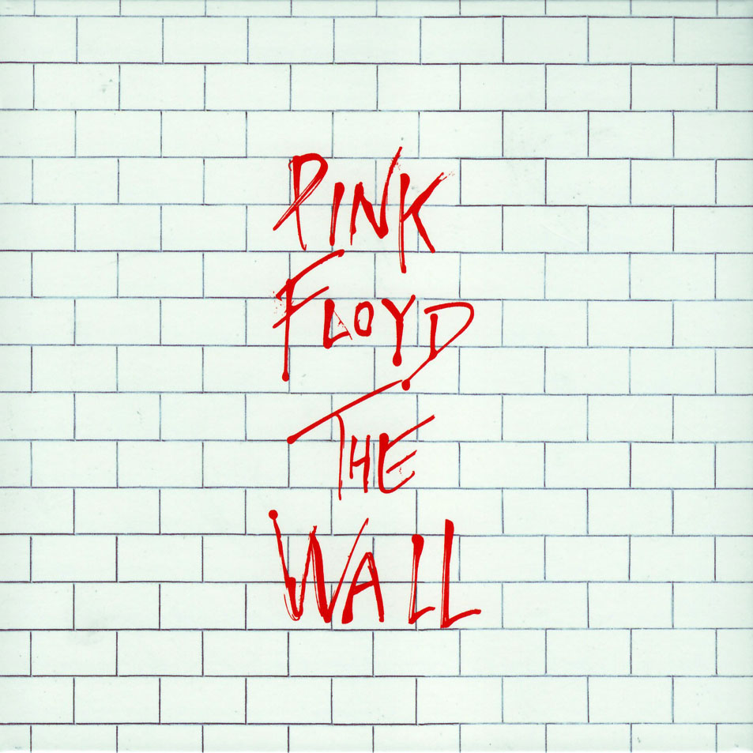
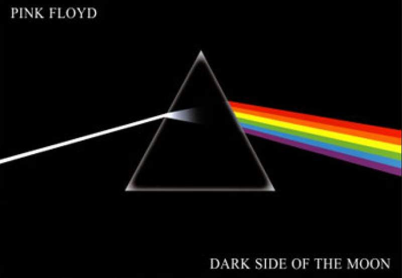
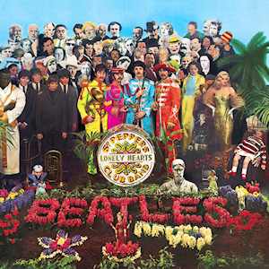

*Add personal description here*
|  |
The Wall by Pink FloydPink Floyd's The Wall, released in 1977, is their 11th studio album. Considered by many one of the greatest concept albums ever recorded, it tells the story of Pink, a rock star constantly facing his own demons which led to total and absolute seclusion, physically and psychologically. |
|  |
Dark Side of The Moon by Pink Floyd1973's The Dark Side of The Moon is Pink Floyd's biggest commercial and critical success. Its experimentalism and thematic made it an iconic progressive rock album that remained on the charts untill 1988. |
|  |
Sgt. Pepper's Lonely Hearts Club Band by The BeatlesThe Beatles Sgt. Pepper's Lonely Hearts Club Band is one of the most, if not the most, iconic rock concept album ever recorded in history. It was the first rock album to receive the Grammy for album of the year and it ranked number 1 in Rolling Stone's magazine "500 Best Albums of All Time". |
This page is seriously not interesting... At all... Have you read all of this? Seriously? What are you doing with your life...?